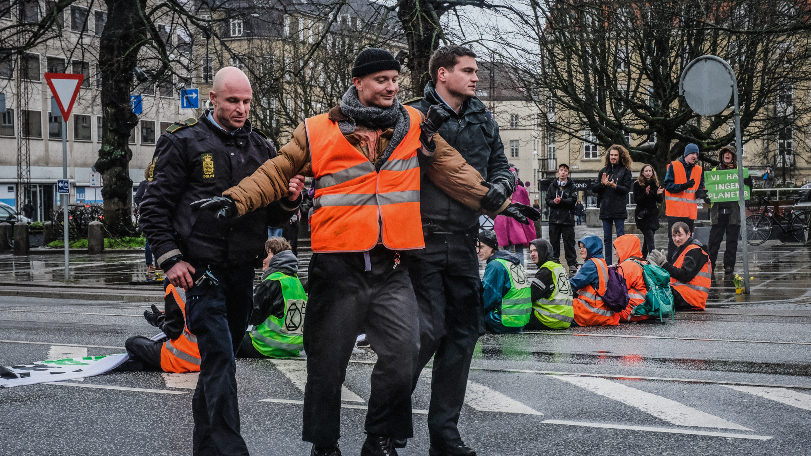

Er ikke-voldlig civil ulydighed for meget? Før du svarer, så tag venligst i betragtning, at vi står overfor en global miljø- og klimakrise. Den kommer til at have konsekvens for os selv og i højere grad de kommende generationer - vores børn og børnebørn.

På billedet ses Morten, som bliver anholdt i forbindelse med en demonstration.
Menneskets adfærd forurener vandet, jorden og luften – den påvirker atmosfæren og temperaturen stiger – den truer økosystemer og udrydder arter i massevis. Ligesom den bruger vores vand, land og ressourcer på en hamrende uhensigtsmæssig måde. Vi risikerer flere store tørker, stigende vandstande, større mangel på drikkevand og større fødevareusikkerhed, kollaps af økosystemer til vands og til lands. Vi risikerer store mængder af ”klima-flygtninge” og massesult i vores – og vores børns fremtid. FN vurderer, at vi har under 12 år til at tage drastiske handling for at undgå de værste konsekvenser af krisen. Ligeså størstedelen af videnskabelige beviser peger i retning af, at vi har et stort problem. Vi ser på nuværende tidspunkt ikke i nærheden af den nødvendige politiske handling, som er nødvendig for at sikre vores trivsel og overlevelse på kloden i fremtiden. Vi går velvidende mod vores egen undergang, for at sige det ligeud. I informationens tid er ignorance et valg. De fleste af os ved godt, at vi står over for disse problemer, men der sker ikke nok for at hindre dem.

Så jeg spørger igen (taget disse ting i betragtning): er civil ulydighed for meget? Har vi ikke alle sammen en moralsk forpligtigelse til at handle, når vi ved at det er nødvendigt for fremtidige generationers overlevelsesmuligheder?
Alle der bekymre sig om deres egen fremtid eller har et ungt menneske I deres liv, som de bekymre sig om:
KONTAKT